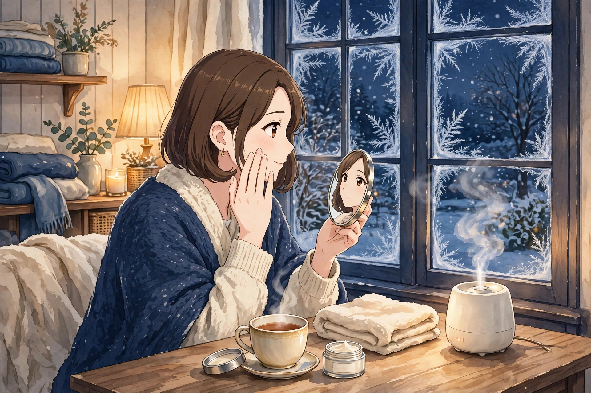

梅田で冬の乾燥が気になるとき｜肌のくすみ・たるみ感と向き合う過ごし方とセルフケアハウツー

梅田で働く・暮らす方へ。冬の乾燥が気になる時期に「洗顔のあと、肌がつっぱる気がする」「夕方の鏡で顔色が冴えず、頬や口元が重く下がって見える」「ファンデーションが粉をふいたように見えて、小じわが目立つ気がする」と感じる肌のくすみ・たるみ感について、一般的な解説と考えられる要因の整理、冬の過ごし方とセルフケア、医療機関への受診の目安をまとめました。一般的な健康情報としてお読みください。
#梅田 冬 乾燥 肌#冬の乾燥 くすみ たるみ感#肌の乾燥 セルフケア 冬#梅田 女性専用 サロン 肌 乾燥#頬 たるみ感 冬 ケア
冬の乾燥と肌のくすみ・たるみ感とは（一般的な解説）
肌のくすみ感やたるみ感は、病名ではなく、鏡を見たときに「顔色が冴えないように見える」「肌の色が均一に見えにくい」「頬や口元が重く下がって見える」と感じる状態を表す言葉として使われることがあります。冬は、ほかの季節は気にならなかったのに、朝の洗顔のあとや、夕方に暖房のきいた室内から外へ出たときに、乾燥と一緒にくすみ感やたるみ感を自覚しやすい時期とされます。空気そのものが乾くことに加え、暖房の風や室内外の寒暖差、マスクやマフラーの摩擦など、冬ならではの要素が一日に重なることが、ほかの季節との違いとされます。梅田では、地下街や駅ビルなど暖房のきいた空間と、冷たい外気を行き来する移動も多く、その切り替えのたびに肌の乾きを感じる方もいます。感じ方には個人差が大きく、その日の湿度や暖房の強さ、眠りの様子によっても変わるとされます。
大切なのは、「夏や秋の自分と比べてどうか」「どんな日に気になりやすいか」という視点です。暖房の強い部屋で長く過ごした日なのか、外を長く歩いた日なのか、眠りが浅かった日の翌日なのか——気になりやすい場面を簡単に記録しておくと、自分の傾向がつかみやすくなります。この記事では、冬の乾燥を切り口に、肌のくすみ・たるみ感の一般的な解説と、背景として考えられる要因の整理からお伝えします。季節を通して気になるくすみ感そのものについては、既存の記事でも整理しています。なお、くすみ感やたるみ感の見え方だけで肌や体の状態を判断することはできません。気になる変化が続く場合は、後半の「受診の目安」もあわせてご確認ください。
考えられる要因の整理
1つ目は、冬の空気の乾燥と、暖房による室内の乾きです。冬は湿度が下がりやすく、暖房のきいた室内ではさらに空気が乾いて感じられることがあります。肌表面が乾いた状態では、光の反射が均一に見えにくくなり、顔色が冴えない印象につながりやすいとされます。洗顔や入浴のあとに保湿までの時間が空く日が続く、熱いお湯で長く洗う日が重なる、といった過ごし方も、乾きを感じやすい場面として挙げられます。ただし、見え方には個人差があり、「乾燥だけが原因」と決めつけられるものではありません。
2つ目は、寒さと、首・肩まわりのこわばりとの関わりです。冷たい外気の中では、無意識のうちに肩をすくめたり首を縮めたりする姿勢が続きやすく、首や肩がこわばった日は、顔まわりも重い印象に感じやすいことがあるとされます。頬や口元のたるみ感は、肌そのものだけでなく、姿勢や首・肩の緊張、夕方のむくみ感と重なって自覚される場合もあると考えられます。東洋医学では、肌の状態を「気・血の巡り」と重ねて捉えることがあり、顔を通る胃経や、東洋医学で皮膚と関わりが深いとされてきた肺経のエリアともあわせて考えられてきました。
3つ目は、睡眠や疲労、年末へ向かう忙しさとの関わりです。冬は日が短く、朝の目覚めがすっきりしにくいと感じる方もいます。眠りが浅い日や就寝時刻がずれる日が重なると、翌朝の顔色が冴えないように感じやすいと訴える方は少なくありません。年末の予定が重なる時期は、夜更かしや食事の時間のずれも重なりやすく、肌の見え方に影響する要素が増える時期とされます。要因はひとつではなく、季節の条件やその日の過ごし方によって組み合わせが変わるため、思い当たるものをひとつずつ見直すことが大切です。
冬の過ごし方とセルフケア
まずは「洗ったあと、時間を置かずに保湿する流れを整える」ことです。洗顔やクレンジングは、力を入れてこすらず、泡や手のひらでやさしく洗うことを基本にし、洗ったあとは時間を置かずに保湿する流れを、朝と夜の習慣として組み立ててみてください。熱いお湯で長く洗うよりも、ぬるめのお湯で短く済ませる方が、冬の乾きを感じにくい過ごし方として挙げられます。使っている化粧品が肌に合わないと感じる日は、無理に重ねず、使い方や製品について薬剤師や販売店、医療機関に相談すると安心です。新しい製品を一度に何種類も試すよりも、ひとつずつ様子を見る方が、自分の肌との相性が分かりやすくなります。
次に「室内の乾きと、外の冷たさへの備えを足す」ことです。暖房の風が顔に直接当たる席では向きを調整する、加湿器や濡れタオルなどで室内の湿度に気を配る、外出時はマフラーやストールで首元を覆い、頬に冷たい風が当たり続けないようにする、といった工夫は、冬の日常に取り入れやすいものです。マスクやマフラーの摩擦が気になる日は、素材や当たる位置を調整してみてください。
あわせて「温めて、首・肩を軽く動かす」ことも、冬の過ごし方の基本とされます。帰宅後に湯船につかって首・肩まで温める、蒸しタオルを首の付け根に当てる、肩甲骨を寄せたり開いたりする動きを入浴後に取り入れるといった工夫は、冷えてこわばった部位をいたわる方法として挙げられます。やけどには十分注意し、痛みを感じるほど強く伸ばす必要はありません。眠る前の画面時間を区切る、就寝時刻を大きくずらさないなど、眠りの準備を整えることも大切とされます。セルフケアはあくまで日常のくすみ・たるみ感への対処です。特定の食品や健康食品、化粧品などに頼りすぎたり、気になる状態を我慢して様子を見続けたりしないようにしてください。
受診の目安｜こんなときは医療機関へ
冬の肌のくすみ・たるみ感の多くは、乾燥や寒さ、睡眠や疲労といった日常の要素が重なって感じられるとされますが、中には医療機関での確認を優先したいサインもあります。「かゆみや赤み、湿疹、ひび割れや痛みを伴う」「気になる範囲が広がってきた」「色の変化が急に進んできた」「シミやほくろの色・形・大きさが変わってきた」「左右で明らかに違う変化がある」「顔やまぶたの腫れを伴う」「冬が終わっても、気になる状態が長く続いている」「日常生活に支障が出るほど気になる状態が続いている」といった場合は、セルフケアで様子を見続けず、皮膚科など医療機関への受診をおすすめします。
また、くすみ感やたるみ感と思っていた背景に、検査で初めて分かる要素が関係していることもあるため、気になる変化が続く場合は一度相談してみてください。当店のケアはリラクゼーションを目的としたボディケアで、肌の状態や病気を診断したり、それらに対応したりするものではありません。医療機関での確認を優先したうえで、日常のコンディションを整える選択肢のひとつとしてご利用ください。
当店でのケアとサロンのご案内
ステラポラリスは、大阪・梅田エリアのレンタルサロンで施術する女性専用・完全予約制のサロンです。営業は月〜土17:00〜22:00（日曜休み）、施術はオイルマッサージと美容整体、料金は90分10,000円です。ご予約はLINE公式アカウント「ポラリス美容整体院」で受付中です。場所は大阪市北区堂山町12-5 ロイヤルハイツ梅田Ⅱ 303号室（レンタルサロンACE内）、中崎町駅から徒歩5分・阪急梅田駅から徒歩8分です。入室方法の詳細はご予約確定後にLINEでご案内します。
施術では、その日の体調や気になる部位をうかがい、首・肩・背中やデコルテを含めた全身を順にほぐしながら、巡りを意識したケアを組み立てます。美容整体では、顔まわり・頭部のケアを組み合わせることもできますので、ご希望があればお伝えください。冬の冷えで体が縮こまって感じられる日は、静かに休む時間を大切にする進め方も選べますので、遠慮なくお伝えください。担当は施術歴30年・鍼灸師資格を持つセラピスト1名で、当店では鍼灸施術は行いません。季節を通した肌のくすみ感については「梅田で気になる肌のくすみ感」の記事で、顔のむくみ感については「顔のむくみ感と朝のケア」の記事で、秋冬の冷えと乾燥の季節の過ごし方については「秋冬の美容ケア」の記事でも紹介していますので、あわせてご覧ください。料金や営業時間の詳細は、メニュー・料金ページでもご確認いただけます。